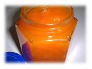

| ..*..*. 2002年7月30日(火) 晴れ ..*..*..  ジャムはときどき作ります。これはアプリコットジャム。以前は失敗したりもしてたのですが、最近ではほとんどうまくできるようになりました(^^) 毎回、レシピ通りの量の果実を買ったり、いちいち作り方を探したりしていると、作るのが面倒になってしまうので、果実酒同様、私は自分で分量を決めてしまって、買ってきたらパパッと作っちゃいます。 手順はこんな感じです。 1.季節の果物を買ってくる。 2.洗ってタネをとったり適当な大きさに切ったり♪ 3.重さをはかって、その半分の量のお砂糖を加える。たとえば、アプリコットが200gだとしたら、お砂糖は100g。 4.お砂糖が果実になじんで、果実から汁が出てくるまで少し置く。 5.中火で5分くらい、アクの出るものはとったり、大きいものはつぶしながら煮る。その後、弱火で2、30分。ときどきかきまぜて、どろっとしてきたらできあがり♪。かきまぜたときにもったりしてくるのが目安です。 6.冷して冷蔵庫へ。 試してみてね(^^) |